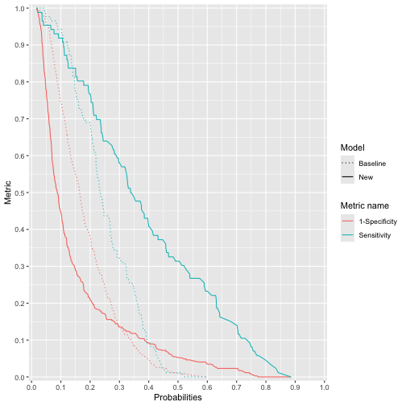
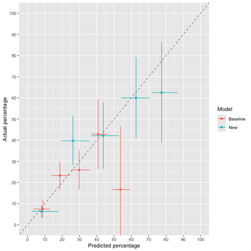
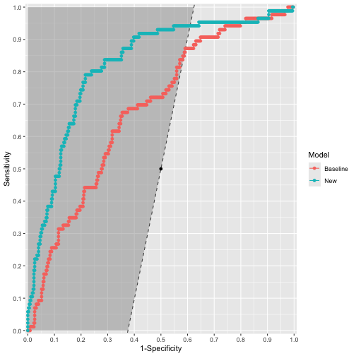
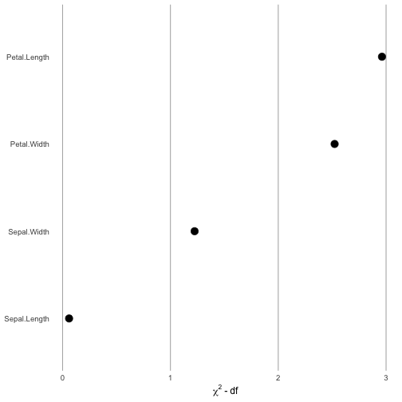

John W Pickering 27 June 2023
The raptools package contains functions for generating statistical metrics and visual means to assess the improvement in risk prediction of one risk model over another. It includes the Risk Assessment Plot (hence rap).
Installation
You can install the development version of raptools from GitHub with:
# install.packages("devtools")
devtools::install_github("Researchverse/raptools")History and versions
raptools began as Matlab code in 2012 after I wrote a paper (1) for the Nephrology community on assessing the added value of one biomarker to a clinical prediction model. I worked with Professor Zoltan Endre on that paper. Dr David Cairns kindly provided some R code for the Risk Assessment Plot. This formed the basis of versions 0.1 to 0.4. Importantly, for those versions and the current version all errors are mine (sorry) and not those of Professor Endre or Dr Cairns. Since writing that paper I’ve come to consider some metrics as not helpful. So, for the current version I have dropped some statistical metrics that I believe are poor or wrongly applied. In particularly, I dropped providing the total NRI (Net Reclassification Improvement) and total IDI (Integrated Discrimination Improvement) metrics. These should never be presented because they inappropriately add together two fractions with differing denominators (NRI) or two means (IDI). Instead, these the NRIs and IDIs for those with and without the event of interest should be provided. Third, I have provided the change in AUCs rather than a p-value because the change is much more meaningful.
Version 1.03 were major changes:
* allowed as input logistic regression models from glm (stats) and lrm (rms) as well as risk predictions calculated elsewhere. * provided as outputs in addition to the Risk Assessment Plot, a form of calibration plot and decision curve.
* the output from the main functions CI.raplot, and CI.classNRI are now lists that include the metrics for each bootstrap sample as well as the summary metrics. CI.classNRI also produces confusion matrices for those with and without the event of interest (separately). Bootstrapping is used to determine confidence intervals.
Version 1.10 :
* addition of ROC plot. * calibration plot now uses (best practice) continuous curves (the old format is now “ggcalibrate_original()”).
* addition of precision recall curves. * all plots can be for one or two models.
Version 1.11:
* made NRI metrics for models optional (use NRI_return = TRUE) to get them. * changed behaviour to that “x2 = NULL” is possible for CI.raplot. It has the effect of creating a model where every probability is 0.5.
* bug fix.
Version 1.22 (current):
* addition of ggcontribute graph. * changed from geom_line to the geom_step for the ROC plot (because it represents the data better).
* bug fix.
Example 1
This is a basic example for assessing the difference between two logistic regression models:
library(dplyr)
library(raptools)
## basic example code
#### First make sure that data used has no missing values
df <- data_risk %>%
dplyr::filter(!is.na(baseline))%>%
dplyr::filter(!is.na(new))%>%
dplyr::filter(!is.na(outcome))
baseline_risk <- df$baseline # or the baseline glm model itself
new_risk <- df$new # or the new glm model itself
outcome <- df$outcome
assessment <- CI.raplot(x1 = baseline_risk, x2 = new_risk, y = outcome,
n.boot = 20, dp = 2) # Note the default is 1000 bootstraps (n.boot = 1000). This can take quite some time to run, so when testing I use a smaller number of bootstraps.
# View results
## meta data
(assessment$meta_data)
#> Thresholds Confidence.interval Number.of.bootstraps Input.data.type
#> 1 baseline 95 20 User supplied
#> X..decimal.places
#> 1 2
## exact point estimates
(assessment$Metrics)
#> $n
#> [1] 433
#>
#> $n_event
#> [1] 86
#>
#> $n_non_event
#> [1] 347
#>
#> $Prevalence
#> [1] 0.1986143
#>
#> $IDI_event
#> [1] 0.1363479
#>
#> $IDI_nonevent
#> [1] 0.03397117
#>
#> $IP_baseline
#> [1] 0.1849132
#>
#> $IS_baseline
#> [1] 0.2516693
#>
#> $IP_new
#> [1] 0.1504058
#>
#> $IS_new
#> [1] 0.388494
#>
#> $Brier_baseline
#> [1] 0.1500246
#>
#> $Brier_new
#> [1] 0.123228
#>
#> $Brier_skill
#> [1] 17.86145
#>
#> $AUC_baseline
#> [1] 0.6823772
#>
#> $AUC_new
#> [1] 0.8227331
#>
#> $AUC_difference
#> [1] 0.1403559
## bootstrap derived metrics with confidence intervals
(assessment$Summary_metrics)
#> # A tibble: 16 × 2
#> metric statistics
#> <chr> <chr>
#> 1 n 433 (CI: 433 to 433)
#> 2 n_event 86.5 (CI: 70.43 to 99.25)
#> 3 n_non_event 346.5 (CI: 333.75 to 362.58)
#> 4 Prevalence 0.2 (CI: 0.16 to 0.23)
#> 5 IDI_event 0.13 (CI: 0.1 to 0.17)
#> 6 IDI_nonevent 0.04 (CI: 0.02 to 0.05)
#> 7 IP_baseline 0.19 (CI: 0.18 to 0.19)
#> 8 IS_baseline 0.25 (CI: 0.23 to 0.27)
#> 9 IP_new 0.15 (CI: 0.13 to 0.16)
#> 10 IS_new 0.39 (CI: 0.34 to 0.42)
#> 11 Brier_baseline 0.15 (CI: 0.13 to 0.17)
#> 12 Brier_new 0.12 (CI: 0.11 to 0.14)
#> 13 Brier_skill 16.37 (CI: 9.72 to 24.46)
#> 14 AUC_baseline 0.68 (CI: 0.64 to 0.72)
#> 15 AUC_new 0.83 (CI: 0.76 to 0.85)
#> 16 AUC_difference 0.14 (CI: 0.11 to 0.19)Graphical assessments
The Risk Assessment Plot
ggrap(x1 = baseline_risk, x2 = new_risk, y = outcome)
# for Single risks x2 = NULLThe original calibration curve
ggcalibrate_original(x1 = baseline_risk, x2 = new_risk, y = outcome, cut_type = "interval")
#> $g
The roc plot
ggroc(x1 = baseline_risk, x2 = new_risk, y = outcome, carrington_line = TRUE)
Note, there are additional options for the ROC plot including labelling points and distinguishing areas of the plot that are diagnostic from those that are not.
The contribution plot
Thanks to Professor Frank Harrell for these plots.
load("inst/extdata/fit_example")
ggcontribute(x1 = eg_fit.glm)
Example 2
This is a basic example for assessing the difference in the results of reclassification:
## basic example code
baseline_class <- data_class$base_class
new_class <- data_class$new_class
outcome_class <- data_class$outcome
class_assessment <- CI.classNRI(c1 = baseline_class, c2 = new_class, y = outcome_class,
n.boot = 20, dp = 2) # Note the default is 2000 bootstraps (n.boot = 2000). This can take quite some time to run, so when testing I use a smaller number of bootstraps.
# View results
## meta data
(class_assessment$meta_data)
#> Confidence.interval Number.of.bootstraps X..decimal.places
#> 1 95 20 2
## exact point estimates and confusion matrices
(class_assessment$Metrics)
#> $n
#> [1] 444
#>
#> $n_event
#> [1] 62
#>
#> $n_non_event
#> [1] 382
#>
#> $Prevalence
#> [1] 0.1396396
#>
#> $NRI_up_event
#> [1] 21
#>
#> $NRI_up_nonevent
#> [1] 94
#>
#> $NRI_down_event
#> [1] 5
#>
#> $NRI_down_nonevent
#> [1] 71
#>
#> $NRI_event
#> [1] 0.2580645
#>
#> $NRI_nonevent
#> [1] -0.06020942
#>
#> $wNRI_event
#> NULL
#>
#> $wNRI_nonevent
#> NULL
#>
#> $confusion.matrix_event
#> New
#> Baseline class_1 class_2 class_3 class_4 class_5 class_6
#> class_1 0 0 0 0 0 0
#> class_2 0 2 3 0 0 0
#> class_3 0 1 0 2 0 0
#> class_4 0 0 2 9 11 1
#> class_5 0 0 0 2 25 4
#> class_6 0 0 0 0 0 0
#>
#> $confusion.matrix_nonevent
#> New
#> Baseline class_1 class_2 class_3 class_4 class_5 class_6
#> class_1 0 0 0 0 0 0
#> class_2 9 52 17 3 1 0
#> class_3 2 29 66 44 3 0
#> class_4 0 2 21 52 25 0
#> class_5 0 0 0 8 47 1
#> class_6 0 0 0 0 0 0
## bootstrap derived metrics with confidence intervals
(class_assessment$Summary_metrics)
#> # A tibble: 10 × 2
#> metric statistics
#> <chr> <chr>
#> 1 n 444 (CI: 444 to 444)
#> 2 n_event 62 (CI: 53.95 to 75.53)
#> 3 n_non_event 382 (CI: 368.48 to 390.05)
#> 4 Prevalence 0.14 (CI: 0.12 to 0.17)
#> 5 NRI_up_event 21 (CI: 15.95 to 29.52)
#> 6 NRI_up_nonevent 90 (CI: 78 to 106.53)
#> 7 NRI_down_event 6 (CI: 2.48 to 9)
#> 8 NRI_down_nonevent 75 (CI: 55.48 to 86.57)
#> 9 NRI_event 0.25 (CI: 0.16 to 0.38)
#> 10 NRI_nonevent -0.05 (CI: -0.12 to 0.01)